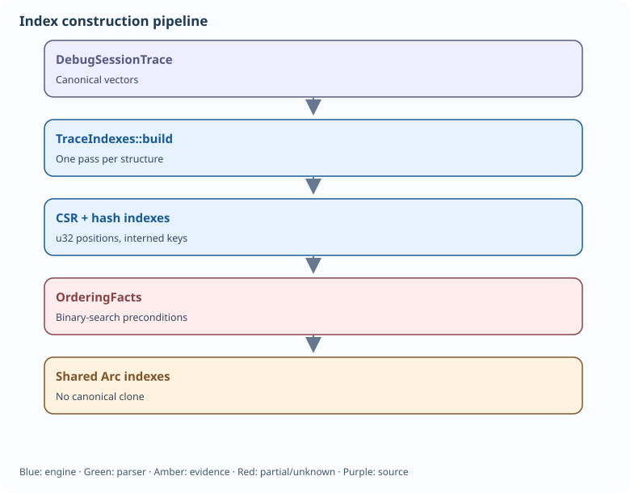
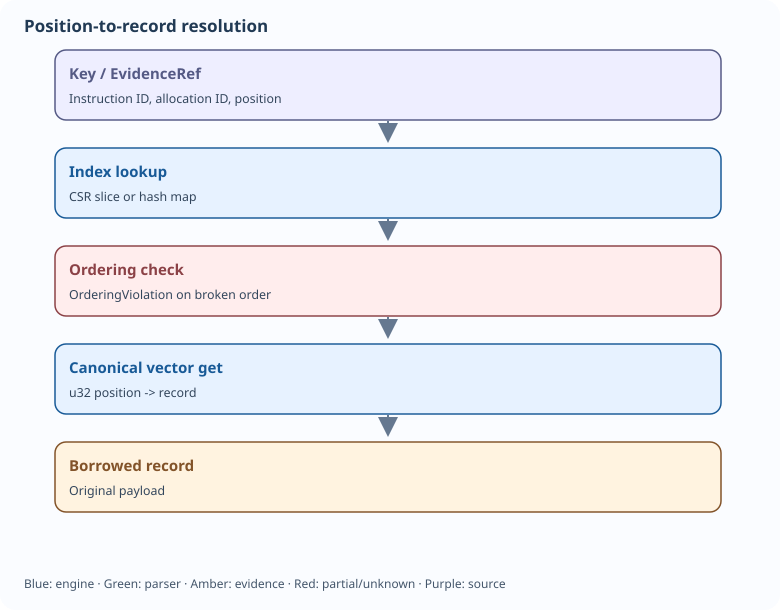
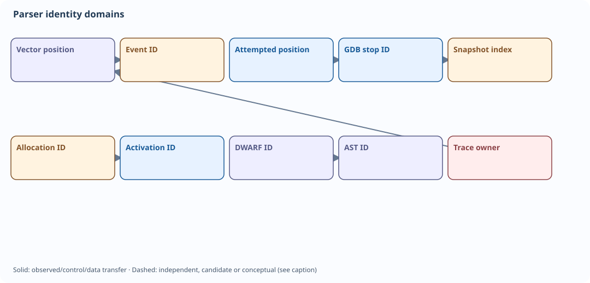

49 · Compact position indexes #
Key terms #
| Term | Plain meaning |
|---|---|
| CSR | Compressed sparse row: two compact arrays tell you where the positions for one key begin and end. Think of a table of contents pointing to a short run of page numbers. |
| Canonical array | The original trace's ordered list of events or snapshots; the index stores positions into it rather than duplicating records. |
>
The big picture #
TP-2 exists so repeated consumer questions do not rescan canonical arrays. The indexes store positions, interned path keys and small ordering facts; they never clone an InstructionEvent, snapshot, heap event or metadata record. TraceIndexes::build runs once during TraceStore::assemble, and every clone of the store shares the same index Arc.
Index inventory #
| Index | Source collection | Key | Stored value | Main consumers |
|---|---|---|---|---|
ExecutionsIndex | instruction_events | disassembly instruction_id | CSR event positions | instruction_execution_positions, instruction_executions |
SourceIndex | instruction_events | exact (file, line) and instruction ID | CSR instruction IDs/event positions/source-key positions | source lookup and reverse instruction→source |
AllocationIndex | heap_events, heap_state, allocation_lifetimes | allocation ID | event positions, state position, lifetime position | heap queries and TP-6/TP-7 |
MetadataIndex | optional DWARF/AST registries | trace-local type/declaration/expression IDs | registry positions and candidate/ambiguity positions | TP-3/TP-6 static lookup |
OrderingFacts | snapshots, events, gaps | recorded sequence | booleans | zero-memory binary searches |
TraceIndexes::build calls each builder in one construction pass (src/trace_parser/indexes.rs:94-116). It does not sort canonical arrays. estimated_bytes is an approximate payload estimate, not process RSS (:123-160).
Disassembly executions: CSR #
ExecutionsIndex stores offsets: Vec<u32> and positions: Vec<u32> (:270-274). The build makes two passes over events:
- Count events per valid
instruction_id. - Build
offsets[id]..offsets[id+1], then fill positions using a cursor.
The result is a compressed sparse row layout: repeated executions of one static instruction stay distinct and appear in ascending event order (:277-309). positions_of rejects an ID outside the disassembly table with InvalidReference and returns the borrowed slice (:313-326). Events with missing or out-of-range IDs are absent from the index; deep validation reports them, and direct queries surface invalid references rather than inventing a match.
Lookup path #
instruction_execution_positions(id)
-> ExecutionsIndex::positions_of(id)
-> offsets[id]..offsets[id+1]
-> &positions[start..end]
-> canonical instruction_events[position]There is no per-query scan and no cloned event vector. Complexity is O(1) slice lookup after O(events + disassembly entries) construction.
Source locations: static and dynamic #
SourceIndex records exact file strings, not basenames (src/trace_parser/indexes.rs:343-397). Each distinct path is interned once; a (file_id, line) key maps to a slot. For each event with both source.file and source.line, the builder accumulates:
event_positions: every recorded event at that location, in event order;instruction_ids: deduplicated disassembly IDs associated by those events;- reverse instruction→source-key positions.
The transient slots are flattened into CSR arrays (:461-499). key_position scans only distinct recorded files, then uses a hash lookup for the line (:507-510). instruction_ids_of is the static side; event_positions_of is the dynamic side. They answer different questions and are never merged.
source_key_positions_of returns source keys for a disassembly ID (:584-597). The disassembly table itself has no source fields in this schema; the association is resolved through recorded event evidence. A source line can therefore have several instructions, and one instruction can have several recorded source contexts.
Allocation identity, never address #
AllocationIndex keys on allocation_id, not address and not vector position (:610-688). It stores:
events_by_id: chronological event positions per ID, including ID 0's untracked events;state_by_id: firstheap_stateposition per ID;lifetime_by_id: first lifetime position per ID.
event_positions_of returns an empty slice for an unknown ID, a valid empty result (:661-666). state_position_of and lifetime_position_of return Option, allowing callers to distinguish "not recorded" from an event history. Duplicate state/lifetime IDs are not silently merged; deep validation reports them.
Metadata identities #
MetadataIndex holds hash maps from trace-local type/declaration/source declaration/source expression IDs to positions (src/trace_parser/indexes.rs:167-257). Candidate and ambiguity maps hold positions into the optional source registry. Duplicate IDs retain the first position; deep validation reports the structural contradiction before trusted semantic queries (:163-166).
This is a static index, not an execution index. A source expression ID never becomes an executed-expression ID, and a heap-call candidate never becomes an allocation identity.
Ordering facts and binary search #
OrderingFacts verifies five recorded orderings in one pass (:694-747):
- snapshot
stop_idstrictly increasing; - event
stop_id_beforenon-decreasing; - event
checkpoint_idnon-decreasing, withNonefirst; - snapshot cumulative
heap_event_countnon-decreasing; - trace-gap
instruction_positionnon-decreasing.
TraceStore::snapshot_at_stop refuses to binary-search unless snapshots_by_stop_sorted is true (src/trace_parser/mod.rs:554-567). events_at_stop checks event stop order and returns a borrowed contiguous run (:578-589). events_at_checkpoint checks checkpoint order (:596-615). heap_events_at_stop checks heap counts and returns the slice between the previous retained snapshot and this one (:634-664). A broken ordering is QueryError::OrderingViolation, not a nearest-match guess.
Position conversion and memory #
pos(index) converts usize to u32 with an assertion that a record count above u32::MAX is impossible under the ingestion byte cap (src/trace_parser/indexes.rs:755-759). Positions are u32 in compact arrays; canonical lookups convert back to usize. This is a checked implementation invariant, not an arbitrary truncation.
estimated_bytes counts CSR arrays at four bytes per position, approximates hash overhead, and includes interned path bytes and metadata maps (:123-160). It excludes allocator bucket metadata, the canonical trace, and the validation report. The historical Stage 1 audit's 900-checkpoint/3,143-instruction workload is evidence about one release benchmark, not a universal RSS bound.
Tests #
tests/trace_parser_indexes.rs covers execution positions, source keys, duplicate/invalid references, heap identity, ordering and iterators. tests/trace_parser.rs exercises public stop/checkpoint/source/heap queries. The tests validate implementation branches; they do not prove that a particular imported trace is semantically valid.
Diagram notes #
Index construction pipeline #


Position-to-record resolution #


Identity domains #

